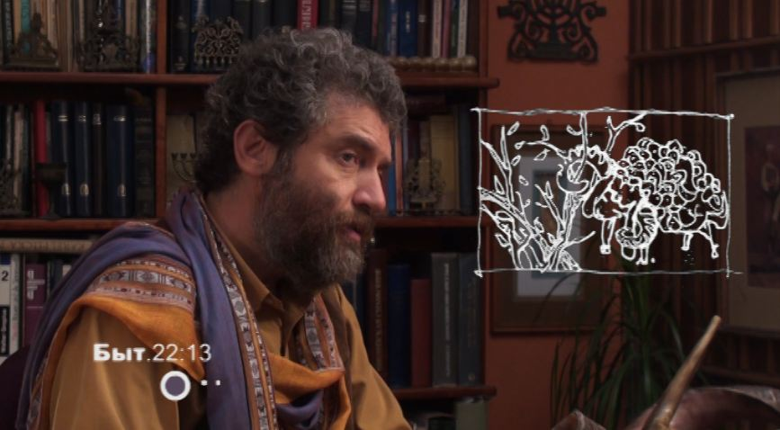
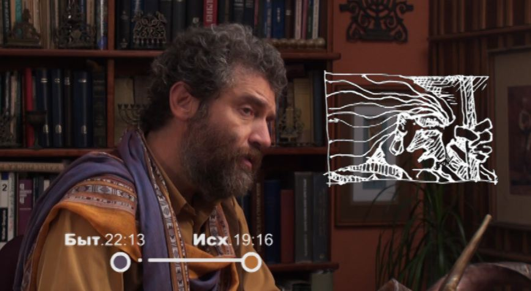
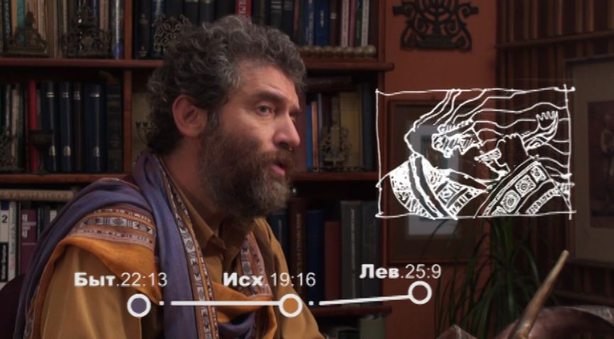
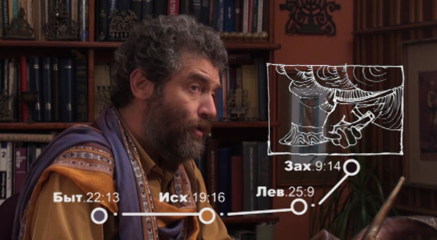

The Voice of the Shofar, Part 5. Israel, a Shofar in the Hands of the Creator
Israel, a shofar in the hands of the Creator
In the previous parts we spoke about the three names of the shofar. Each name carries a particular prophetic action, and each is a call to the one who knows and listens to the Voice of the Shofar.
The story of the shofar from the time of our father Avraham to this day is as follows:
— The lamb provided by the Eternal One appeared caught in a thicket before our father Avraham and took the place of Yitzhak on the altar. Avraham offered it up as a burnt offering, an olah, and with it the horn too was raised up from the earth (keren, proclaiming the calling) (Gen. 22:13).
— At mount Sinai Israel was the first to hear the sound of this horn from heaven (the shofar, calling to correction) (Exod. 19:16). The Most High Himself blew it and handed on to His people the knowledge of this voice. From then on He commanded Israel to blow (Lev. 25:9). The calling of Avraham and his descendants is like a horn in the hands of the Creator: a horn that spreads the sound of good news, and a ray (KEREN) that brings the light of the word of the Most High into this world. (The calling of Avraham and his descendants can be pictured symbolically. Avraham, Yitzhak and Yaakov (Israel) together, through their calling, make up a shofar, as it were: Avraham is the beginning, the mouthpiece; Yitzhak is the body, the tube; Yaakov (Israel, with his twelve sons) is the bell, the crown.)




Israel must blow and listen to the blowing until the LORD Himself blows the shofar again, the yovel (Zech. 9:14), proclaiming the great freedom, the jubilee, for all nations, for everyone who will obey His voice. For Israel, blowing the shofar is not just a tradition; it is a duty, a mitzvah (a command from the LORD), and its responsibility: to teach all nations to hear the voice of the Shofar.
"Happy is the people that know the joyful shout (תרעה); they walk, O LORD, in the light of Thy countenance." (Ps. 89:15) David Yosifon offers this translation: "Happy is the people that knows how to blow…"
The blessing: Barukh atah Adonai, Eloheinu melekh ha-olam, asher kideshanu be-mitzvotav ve-tsivanu lishmoa kol shofar. "Blessed are You, O LORD our God, King of the Universe, who has sanctified us with His commandments and commanded us to hear the voice of the Shofar." This is the brakhah, the traditional blessing said before the blowing of the shofar.
***
For three and a half thousand years now the voice of the shofar has been sounding.
Our sages say: "The sound of Sinai never ceases."
Ever since the Most High laid on Israel the responsibility to blow the shofar. God Himself blew it, and then handed on to Israel the responsibility to blow…
THE SHOFAR IS BLOWN:
— at the anointing of a king;
— at the feast of the new moon;
— to rebuke sin and call to repentance;
— to instil the fear of God;
— to remind of the day of the LORD, of the coming judgment;
— as a call to the reunion of Israel in its land, in the land of Israel with its capital in Jerusalem, the eternal city of the King;
— as a reminder of the coming of the Mashiakh;
— at the resurrection of the dead: "In a moment, in the twinkling of an eye, at the last trump… the dead shall be raised incorruptible…" (1 Cor. 15:52);
— "And it shall come to pass in that day, that the LORD will beat off His fruit from the flood of the River unto the Brook of Egypt, and ye shall be gathered one by one, O ye children of Israel. And it shall come to pass in that day, that a great shofar shall be blown (יתקע בשופר גדול); and they shall come that were lost in the land of Assyria, and they that were dispersed in the land of Egypt; and they shall worship the LORD in the holy mountain at Jerusalem." (Isa. 27:12–13)
"For the Lord Himself shall descend from heaven with a shout, with the voice of the archangel, and with the trump of God: and the dead in Christ shall rise first…" (1 Thess. 4:16)
***
One often hears the opinion that the shofar is not a musical instrument!?
But music is not only consonances, harmonies and passages. Above all it is the images, feelings and revelations it brings to birth. That is what is so overwhelming about the shofar and the sound it pours out. It can work something very important in our souls: it awakens trembling and awe before the Creator, it joins the millennia together, it reaches out of time into eternity.
In this sense the shofar is as musical as anything can possibly be.
See also the other parts of "The Voice of the Shofar":
— Part 1
— Part 2
— Part 3
— Part 4
***
See also my film on this subject, "The Voice of the Shofar". Studio TORAH-ART. Composer Daniel Kruglov.
***
More video on keeping the commandment of blowing the shofar: see here.
Author: Ephraim Kalish / Torah-Art